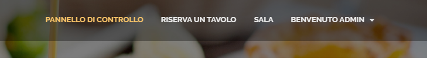
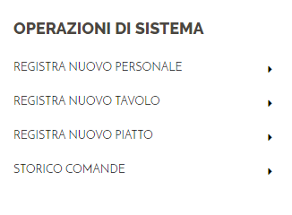
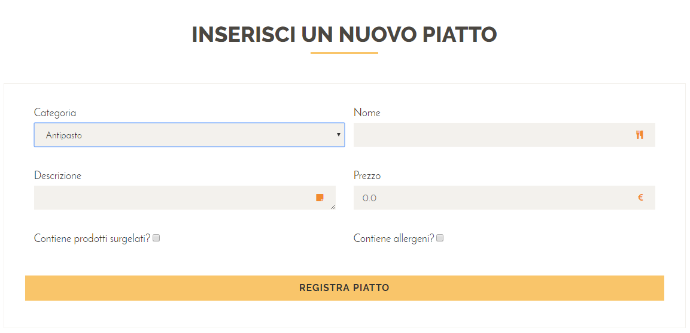
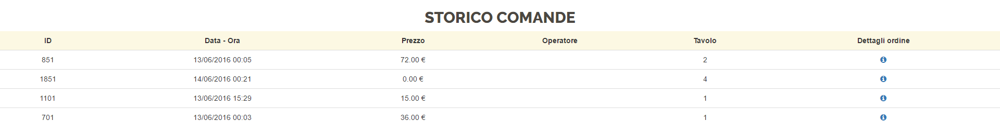
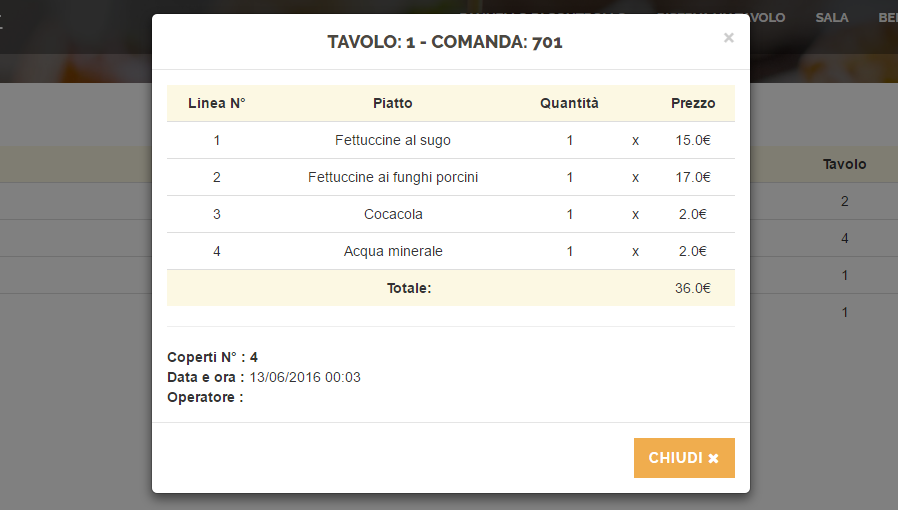
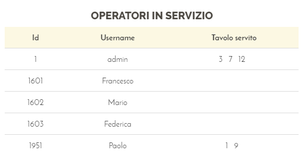
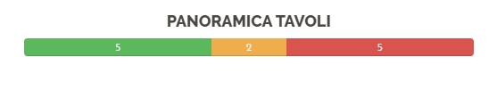
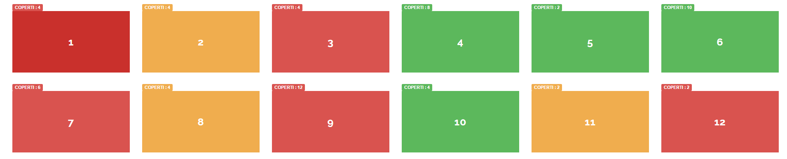
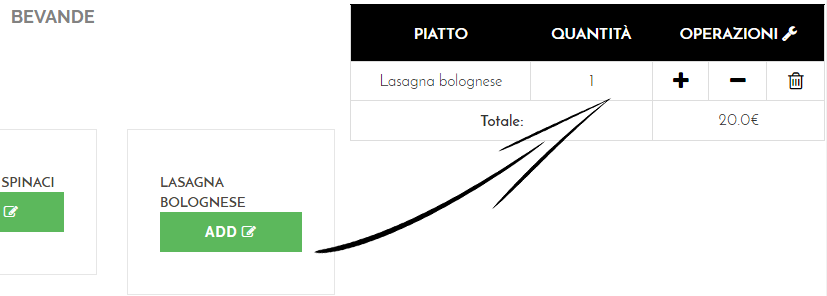

Da Peppe Restaurant
Documentazione Sito internet — Da Peppe restaurant -
Alessandro Giannetti & Federico Arcangeli
Versione e Autori
- Nome sito: Da Peppe Restaurant
- Versione : v 1.0
- Autori : Alessandro Giannetti & Federico Arcangeli
In questo manuale vedremo passo dopo passo le varie funzionalità del sito mostrandovi in che modo questo portale multimediale possa facilizzare la gestione di un ristorante.
Introduzione alla navbar
Benvenuti nella Home Page di Peppe
restaurant
arrivati nella Home Page (
index_parallax.jsp
) del sito vi si presenterà una nav bar nella parte
superiore con la quale si potrà navigare tra le varie pagine
del sito internet.

Registrazione utente # Torna all'indice
Un utente per poter usufruire dei servizi che mette a
disposizione la piattaforma "Da Peppe restaurant" dovrà
registrarsi nella apposita form situata nella pagina
loginSignup.jsp
.
Cliccando la voce della navbar Login/Signup si potrà
accedere a tale pagina.

Una volta cliccata la voce Login/Signup si aprirà la seguente form nella quale sarà possibile effettuare la registrazione di un nuovo account inserendo i propri dati.

una volta cliccato il pulsante si aprirà una finestra nella quale sarà esposto un sunto dei dati inseriti e chiederà la conferma di tale registrazione.

Se tutto andrà a buon fine alll'utente verrà recapitata una mail di avvenuta registrazione e sarà reindirizzato nella Home Page con privilegi da "Utente registrato", e potrà quindi accedere ad aree riservate del sito.
nella Home Page saranno mostrate due voci aggiuntive:
Riserva
Tavolo
Benvenuto "nome utente loggato"
dalla quale sarà possibile accedere al profilo.

Nel momento dell'iscrizione vengono effettuati vari controlli sui campi della form, tra cui la verifica dei campi obbligatori, ma in particolare vengono gestiti i seguenti errori:
Gestione errore utente già esistente #Torna all'indice
Se l'utente inserisce una username già presente all'interno del database il sistema visualizza il seguente messaggio di errore:
Gestione errore password non corrispondenti #Torna all'indice
Il sistema per poter aiutare l'utente a non sbagliare l'inserimento della password introduce un campo Conferma password. Nel momento in cui le due password non corrispondono il sistema visualizza il seguente messaggio di errore:
Login utente#Torna all'indice
Un utente per poter usufruire dei servizi che mette a
disposizione la piattaforma "Da Peppe restaurant" dovrà
registrarsi e quindi a questo punto Loggarsi nella apposita form
situata nella pagina
loginSignup.jsp
.
Cliccando la voce della navbar Login/Signup si potrà
accedere a tale pagina.
Una volta cliccata la voce Login/Signup si aprirà la seguente form nella quale sarà possibile effettuare il login inserendo i propri dati.

Gestione errore utente non esistente #Torna all'indice
Se un utente inserisce una username non presente all'interno del database viene mostrato il seguente errore:
Gestione errore username/password errata #Torna all'indice
Se un utente inserisce una username valida ma una password non corretta allora il sistema mostra il seguente messaggio di errore:
Operazioni utente#Torna all'indice
Prenotazione tavolo #Torna all'indice
Il prerequisito per prenotare un tavolo è essere loggati nel
sistema.
la pagina denominata
prenotazione.jsp
sarà quindi raggiungibile tramite l'apposito bottone nella
navbar.

Una volta aperta la pagina si presenterà la seguente form:

nel momento in cui i dati vengono inseriti e viene cliccato il
pulsante
viene visualizzata una finestra riepilogativa dalla quale sarà
possibile confermare la prenotazione.

se nel ristorante sono presenti tavoli liberi allora all'utente loggato sarà associata una prenotazione e sarà recapitata una mail di riepilogo. a schermo sarà mostrato il seguente messaggio di successo:
Altrimenti se nella sala non è presente un tavolo con il numero di ospiti indicato nella form allora verrà visualizzato il seguente messaggio di errore:
É anche possibile che nella sala sono presenti tavoli con abbastanza coperti per gli ospiti della prenotazione ma sono tutti occcupati, allora in questo caso sarà visualizzato il seguente messaggio di errore:
Consultazione profilo #Torna all'indice
Il prerequisito per poter accedere al proprio profilo è essere
loggati nel sistema.
la pagina denominata
profilo.jsp
sarà quindi raggiungibile tramite l'apposito bottone nella
navbar.

una volta che si è acceduti alla pagina di profilo sulla sinistra avremo un riepilogo dei nostri dati, mentre nella parte centrale sarà presentata la lista delle prenotazioni effettuate dall'utente.

Lo stato della prenotazione #Torna all'indice
Le prenotazioni effettuate dall'utente possono trovarsi in 4 diversi stati:
- L'utente ha effettuato la prenotazione ma non è ancora arrivato nel ristoranre
- L'utente è arrivato nel ristorante ed ha iniziato ad ordinare
- L'utente ha pagato ed ha concluso la prenotazione con successo
- l'amministratore ha cancellato la comanda associata alla prenotazione
Eliminazione prenotazioni #Torna all'indice
L'utente ha la possibilità di poter eliminare una prenotazioni
finchè non è stata presa in incarico, ovvero che sia ancora nello
stato .
Premendo quindi l'icona verrà mostrato un messaggio di
avviso di eliminazione.

Una volta premuto il pulsante la prenotazione verrà eliminata definitivamente.
Nel momento in cui lo stato è diverso da quello consentito per l'eliminazione l'icona del cestino sarà sostituita con .

Login Amministratore ed Operatore#Torna all'indice
per poter usufruire delle funzionalità del sistema, bisognerà
accedere alla pagina di Login degli Operatore denominata
administrator.jsp
.
A differenza dell'utente l'accesso è nascosto, e
quindi non accessibile dalla navbar, bensì si dovrà scrivere il
percorso nell'URL:

effettuato l'accesso il sistema aprirà una pagina diversa asseconda del ruolo assegnato al dipendente del ristorante.
Pagina AMMINISTRATORE
home_Administrator.jsp

Pagina OPERATORE
home_Operatore

Gestione errore utente non esistente #Torna all'indice
Se un utente inserisce una username non presente all'interno del database viene mostrato il seguente errore:
Gestione errore username/password errata #Torna all'indice
Se un utente inserisce una username valida ma una password non corretta allora il sistema mostra il seguente messaggio di errore:
Gestione errore accesso utente non autorizzato #Torna all'indice
Se un utente inserisce una username valida ma non ha i permessi per accedere allora il sistema mostra il seguente messaggio di errore:
Pannello di controllo#Torna all'indice
una volta effettuato l'accesso con un account con privilegi di
amministratore sarà possibile accedere alla pagina
home_Administrator.jsp
. L'amministratore a differenza dell'operatore ha una visione
d'insieme della sala, può effettuare operazioni contabili (
scontrino ) ed operazioni
riservate al solo amministratore.


Registra nuovo personale #Torna all'indice
L'amministratore selezionando la voce Registra
nuovo personale verrà reindirizzato alla pagina
registraPersonale.jsp
ed avrà la possibilità di inserire nuovi operatori di sala
compilando la seguente form:

Se l'inserimento andrà a buon fine il sistema mostra il seguente messaggio di successo
in caso contrario se viene inserito un'operatore con una username già presente nel database verrà mostrato il seguente messaggio di errore
Registra nuovo tavolo #Torna all'indice
L'amministratore selezionando la voce registra
nuovo tavolo verrà reindirizzato alla pagina
registraTavolo.jsp
ed avrà la possibilità di inserire nuovi tavoli nella sala
compilando la seguente form:

Se l'inserimento andrà a buon fine il sistema mostrerà il seguente messaggio di successo
in caso contrario se viene inserito un tavolo con codice già presente nel database viene mostrato il seguente messaggio di errore
Registra nuovo piatto #Torna all'indice
L'amministratore selezionando la voce registra
nuovo piatto verrà reindirizzato alla pagina
inserimentoPiatto.jsp
ed avrà la possibilità di inserire nuovi piatti nel sistema
compilando la seguente form:

L'amministratore seleziona da una delle seguenti voci la categoria del piatto associandola quindi al piatto stesso.

Le categorie vengono inserite dinamicamente all'interno del tag
select
tramite il seguente metodo del controller:
@PostConstruct
public void init() {
this.categorie = this.cpFacade.findAll();
...
}
in questo modo ad ogni richiesta della pagina il controller eseguirà la query.
Se l'inserimento andrà a buon fine il sistema mostrerà il seguente messaggio di avvenuta memorizzazione
Storico comande #Torna all'indice
L'amministratore selezionando la voce Storico
comande verrà reindirizzato alla pagina
storicoComande.jsp
ed avrà la possibilità di visionare tutte le comande del
ristorante

cliccando sull'icona si ha la possibilità di vedere lo scontrino associato alla comanda

Utilizzo del pannello di controllo #Torna all'indice
il pannello è composto da un insieme di tabelle, le quali offrono una buona visibilià sulla situazione della sala

Iniziamo con l'analizzare le tabelle da sinistra verso destra quindi:
Ricapitolando i 3 possibili stati in cui può trovarsi una prenotazione:
- L'utente ha effettuato la prenotazione ma non è ancora arrivato nel ristorante
- L'utente è arrivato nel ristorante ed ha iniziato ad ordinare
- L'utente ha pagato ed ha concluso la prenotazione con successo
- l'amministratore ha cancellato la comanda associata alla prenotazione
La tabella delle prenotazioni è fortemente collegata alla tabella delle comande, infatti nel momento in cui una comanda viene conclusa ( stampando lo scontrino ) la prenotazione verrà contrassegnata con o con in caso di eliminazione della comanda.
Comportamente delle tabelle prenotazioni e comande in corso alla conclusione di una comanda
proviamo a concludere la comanda numero 2151:


Come si evince dalle immagini nel momento in cui una comanda viene conclusa viene spostata dalla tabella comande giornaliere in corso alla tabella comande giornaliere completate. Nel caso in cui alla comanda è associata una prenotazione lo stato della prenotazione viene settato a
la conferma della comanda ( o eliminazione ) non ha ripercussioni solo sulle prenotazioni, infatti una volta che la comanda si sposta nella tabella comande giornaliere completate il tavolo a cui erano seduti i clienti torna libero. Prima di continuare vediamo i possibli stati in cui un tavolo può trovarsi:
possibili stati del tavolo

Rispettivamente un tavolo può essere LIBERO PRENOTATO OCCUPATO
Quindi nel momento in cui la comanda viene confermata o
eliminata, il tavolo passa dalla stato OCCUPATO → LIBERO
Parleremo più
approfonditamente delle altre variazione di stato nella sezione
della sala. Per ora ci basti sapere che il tavolo diventa libero.
Fino ad ora abbiamo visto come la tabella prenotazioni interagisce con la tabella comande in corso. a questo punto vediamo la tabella Operatori in Servizio.
Ad ogni operatore è associata una lista di tavoli che sta servendo in quel determinato momento. Nel momento in cui una comanda presa in incarico da un operatore viene confermata o eliminata la tabella viene aggiornata

ovviamente viceversa nel momento in cui un operatore inizia a compilare una comanda viene associato a quell'operatore (indirettamente) il tavolo.
Panoramica tavoli
Permette di capire a colpo d'occhio la situazione della sala colorando come in precedenza i tavoli in base allo stato.

Prenotazione di una tavolo #Torna all'indice
Il prerequisito per prenotare un tavolo è essere loggati nel
sistema. la pagina denominata
prenotazioneAdmin.jsp
sarà quindi raggiungibile tramite l'apposito bottone nella
navbar.

L'amministratore del sistema può prenotare a nome di un cliente (anche non iscritto al sistema) che chiama al ristorante e desidera riservare un tavolo.

se nel ristorante sono presenti tavoli liberi allora al nominativo rilasciato telefonicamente sarà associata una prenotazione. a schermo sarà mostrato il seguente messaggio di successo:
Altrimenti se nella sala non è presente un tavolo con il numero di ospiti indicato nella form allora verrà visualizzato il seguente messaggio di errore:
É anche possibile che nella sala sono presenti tavoli con abbastanza coperti per gli ospiti della prenotazione ma sono tutti occcupati, allora in questo caso sarà visualizzato il seguente messaggio di errore:
Sala #Torna all'indice
La sala è un elemento chiave per il funzionamento del sistema, in quanto permette l'apertura delle comande e la loro modifica.
La sala può essere acceduta sia da Operatori di sala che dall'amministratore di sistema tramite l'apposito bottone nella nav bar

Una volta entrati nella "Sala" avremo una visione di insieme dei tavoli
Gli stati di un tavolo #Torna all'indice
Riprendiamo la trattazione degli stati dei tavoli, ricapitolando quanto detto nella sezione del pannello di controllo specificando questa volta tutte le varie transazioni di stato che un tavolo può subire.
Rispettivamente un tavolo può essere :
- LIBERO
- PRENOTATO
- OCCUPATO
nel momento in cui un cliente si presenta al ristorante senza aver prenotato all'apertura della comanda il tavolo passa da PRENOTATO→OCCUPATO
nel momento in cui un cliente si presenta al ristorante avendo prenotato all'apertura della comanda il tavolo passa da LIBERO→OCCUPATO
nel momento in cui la comanda viene conclusa o eliminata, il
tavolo passa dalla stato
OCCUPATO → LIBERO
Apertura di una nuova comanda #Torna all'indice
cliccando su un tavolo LIBERO o PRENOTATO si aprirà una nuova
comanda e verremo reinderizzati nella pagina
comanda.jsp
e potremo iniziare a prendere il nostro ordine
Notare il cambiamento di stato del tavolo una volta aperta una comanda associata ad esso.

Apertura comanda "in corso" #Torna all'indice
cliccando invece su un tavolo OCCUPATO saremo reindirizzati alla
pagina
comanda.jsp
e avremo la possibilità di recuperare la comanda relativa al
tavolo e di poter aggiungere e/o eliminare piatti dalla comanda
Comanda #Torna all'indice
Una volta arrivati attraverso la pagina della sala
sala.jsp
nella pagina della comanda
comanda.jsp
, avremo la possibilità di inserire dei piatti all'interno della
comanda.
Quindi selezionando il tavolo numero 10
Verrà aperta una nuova Comanda relativa al tavolo

La pagina della comanda è divisa in due parti:
La parte
sinistra dove gli operatori di sala potranno scorrere i piatti
presenti nel menù e filtrarli tramite le apposite voci poste
superiormente.
La parte destra invece presenta una
comanda parziale, che verrà popolata durante la permanenza dei
clienti.
Inserimento piatto/i #Torna all'indice
Una volta aperta la comanda non resta che inserire i piatti scelti dai clienti
Per poter aggiungere una comanda basta premere il pulsante ADD , e la comanda parziale verrà aggiornata, mostrando una nuova linea di comanda contenente il piatto e la quantità desiderata, aggiornando poi il prezzo totale della comanda.
Modifica della quantità dei piatti #Torna all'indice
Una volta aggiunto il piatto alla comanda abbiamo la possibilità di modificare la quantità di tale piatto.
per incrementare la quantità abbiamo 2 possibili soluzioni:
Rimpremere il pulsante ADD
del piatto.
Premere il pulsante sulla riga della comanda la quale
si vuole incrementare la quantità.

Mentra per ridurre la quantità possiamo solamente premere il pulsante dalla corrispettiva linea di comanda

Rimozione piatto dalla comanda #Torna all'indice
Per rimuovere un linea della camanda basterà premere il pulsante
Operatore#Torna all'indice
L'operatore a differenza dell'amministratore potrà consultare
solamente la sala, creare comande e popolarle.
inoltre
ha la possibilità di effettuare prenotazioni per gli utenti.